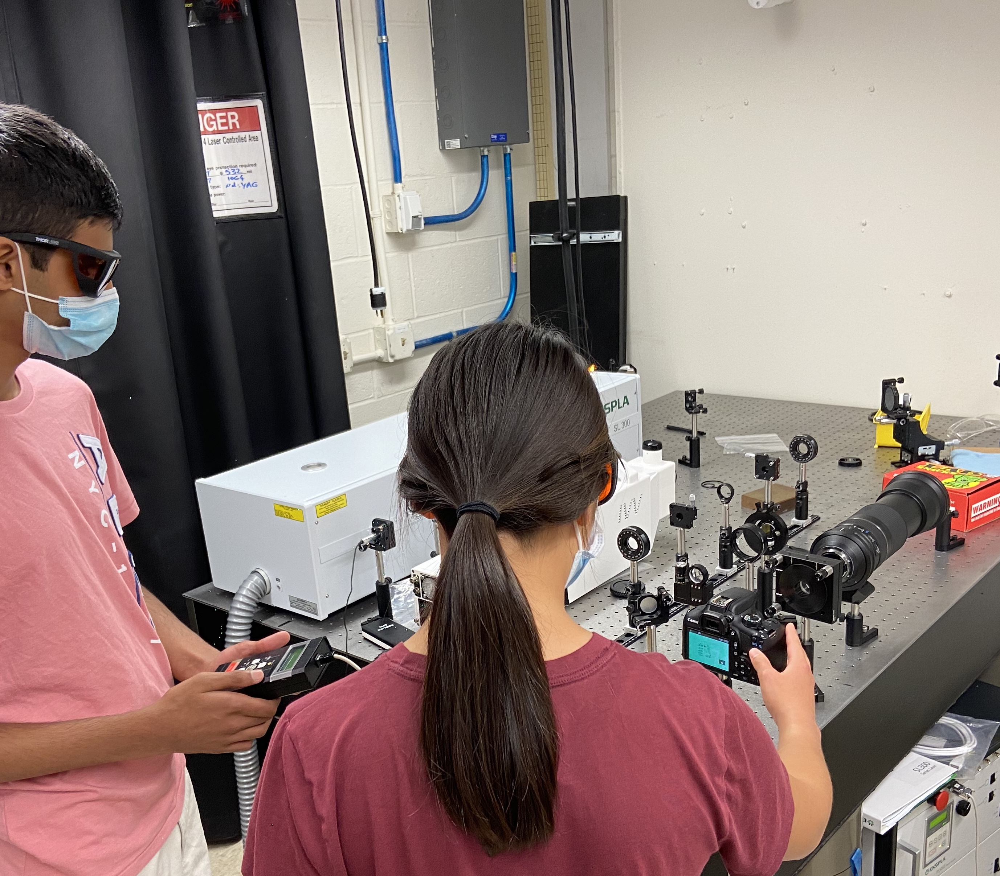

Outreache
Research Experience for High school students (REH)
In the summer of 2020, in the midst of full-blown panini lockdown, the Gourdain lab took a leap into the world of building meaningful, long-term connections with the local Rochester community through a program we named the REH: Research Experience for High school students. This is a nod to the NSF-funded "Research Experiences for Undergrads (REU)" that are popular and well-respected across disciplines and institutions. These are paid, immersive research experiences that last an entire summer in which a student takes on a significant research project, and is often a direct stepping-stone to getting into a graduate research program. We decided to design our outreach program with this model in mind, but we scaled the length down to a month and set the goal of providing positive exposure to physics research for students. The students would also learn some great research skills that could be applied if they decided to continue research in college.
For the first summer, due to the lockdown we operated completely virtual, meeting with the students once or twice a day on Zoom. These meeting times were used to teach the students about our lab's research, show research talks from professors, teach them basic python coding, and work on mini data analysis projects. We had nine students total, assigned in groups of three to one of the graduate student mentors in my lab (myself, James Young, and Imani West-Abdallah). At the end of the "internship," each of the groups presented their findings to each other and the members of the Gourdain lab. We kept in touch with these students after the month-long internship, checking in and offering support in applying to college.
For the second summer (2021), we stepped up the program another level (or five). The students were now in person five days a week and would be completing 5 weeks of paid work/education. We supplemented the Intro to Python workshop with a number of other research skill workshops, including 3D CAD modeling and circuitry. The students also participated in career development workshops, graduate and undergraduate research talks, and lab tours weekly. We also expanded the program into another research group, the Blok lab, which studies quantum information. Students worked in the lab in-person for a couple hours every day in pairs this time with their graduate mentors; myself, Imani, and a third group in the Blok lab: Ray Parker and Mihirangi Medahinne Gedara. Each group worked on a separate experimental physics project in which the students gathered data and performed analysis.
Python for High School Students